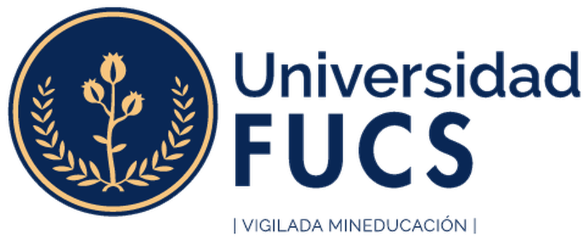

Facultad
de Enfermería
de Enfermería
Simulación
materno-perinatal
Protocolo de atención del parto
DocentesAngie Ojeda · Andrés Arango · Carolina Cuesta
¿En qué sala están?
Situación

FacultadEdad gestacional = días desde la FUM ÷ 7
FPP (regla de Naegele) = FUM + 7 días − 3 meses + 1 año